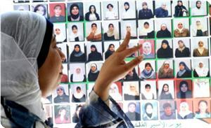

Au nom d’Allah le Clément, le Miséricordieux, Louanges à Allah.
Palestine 21/03/10

Les fêtes des femmes et des mères passent sans que les femmes palestiniennes enfermées puissent penser en profiter. Les années passent et les chaînes continuent de ronger leurs poignets. Les organisations internationales qui fêtent cette journée du 8 mars ne savent-elles pas que les barreaux de l’occupation israélienne enferment des Palestiniennes ?
Riyad Al-Achqar, directeur du comité de défense des captifs, dans un rapport paru à l’occasion de la journée mondiale des femmes, dit que plus de dix mille Palestiniennes ont vécu le calvaire des prisons israéliennes, depuis 1967. Et pendant l’Intifada d’Al-Aqsa, les occupants israéliens ont enlevé plus de 900 Palestiniennes dont 37 sont toujours enfermées. Ces occupants n’ont pas l’intention d’arrêter leur politique. Depuis le début de cette année 2010, ils ont mis la main sur trois femmes.
Les femmes palestiniennes emprisonnées vivent dans des conditions infernales. Les occupants israéliens ne respectent aucune convention internationale. Elles sont privées de leurs droits les plus élémentaires. Elles sont maltraitées, torturées, physiquement comme moralement. A l’instar de tous les captifs palestiniens, elles souffrent de cette affreuse politique de négligence médicale. Elles sont également privées de leur droit à l’éducation.
Al-Achqar a souligné que les captives ont été récemment transférées de la prison Al-Damoun vers un autre centre de détention. A celui-là manquent toutes les conditions nécessaires d’une vie normale, surtout en hiver. La pluie pénètre les cellules jusqu’aux lits et vêtements. Les câbles électriques sont mouillés, un danger supplémentaire pour la vie des femmes captives.
La négligence médicale
Le rapport d’Al-Achqar précise qu’un tiers des captives sont malades. Plusieurs d’entre elles souffrent de maladies graves, dans une prison qui ne possède aucun médecin spécialiste. Il n’y a qu’un infirmier qui n’a à proposer que de cachets tranquillisants.
Les captives n’ont pas d’autre moyen que de se soigner avec des plantes et des recettes traditionnelles, avec les moyens du bord.
La captive Amel Fayez Jam’a souffre du cancer du col de l’utérus.
Rajaa Al-Ghoul souffre de plusieurs maladies graves, au niveau du cœur et du sang. Son état est très grave.
Des maladies de toutes sortes attaquent la peau de beaucoup de captives. En fait, les insectes font rage dans leurs cellules, les produits de nettoyage sont quasi inexistants.
Il faut dire aussi que beaucoup d’entre elles souffrent de maladies et de maux au niveau des os et des dents.
Appel de détresse
Pour tout cela et pour beaucoup d’autres raisons, le comité de défense des captifs a appelé toutes les factions palestiniennes qui détiennent le soldat israélien Shalit à rester sur leur position et à exiger la libération de toutes les captives palestiniennes enfermées dans les prisons israéliennes.
Le comité a aussi exhorté les médias à focaliser leur lumière sur les souffrances des captives palestiniennes, sur les agressions pratiquées contre elles par les occupants israéliens.
Il a enfin appelé les organisations internationales et la communauté internationale à intervenir de façon urgente pour mettre fin aux souffrances grandissantes des captives palestiniennes.
-------------------------------
La dégradation économique des territoires palestiniens a entraîné un accroissement inquiétant de la pauvreté et une détérioration importante des conditions de vie. Une évaluation effectuée en 2003, par la FAO et le PAM, sur la sécurité alimentaire a révélé qu’environ 40 % des palestiniens vivent en situation d’insécurité alimentaire permanente. La banque mondiale estime que 21 % de la population, de Cisjordanie et de la bande de Gaza, était pauvre avant le début de l'Intifada et 60 % en décembre 2002. Une pauvreté sans cesse croissante En 2004, 47 % de la population vivait avec moins d’1,5 euros par jour et 16% dans une très grande pauvreté, avec moins d’un euro par personne et par jour (Nations Unies). La pauvreté des palestiniens ne cesse d’augmenter depuis la construction du mur et la misse en place du plan de dégagement. L’édification du mur a entraîné la réquisition d’espaces construits ou cultivés pour la mise en place de zones tampons. Ces zones privent les palestiniens d’une superficie non négligeable et hautement fertile de leur territoire. Plus de 53 communautés de Jenin, Tulkarem et Qualquilia, soit près de 140.000 personnes, subissent les conséquences directes de cette construction, responsable de l’arrachage de plus de 8.400 ha d'oliviers et autres arbres fruitiers.
http://www.secours-islamique.org/Appels/Palestine.html